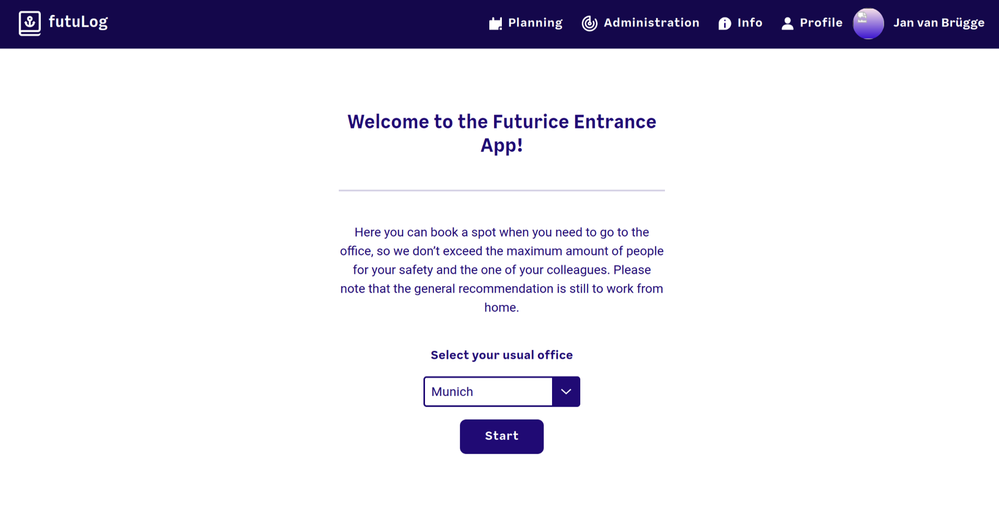
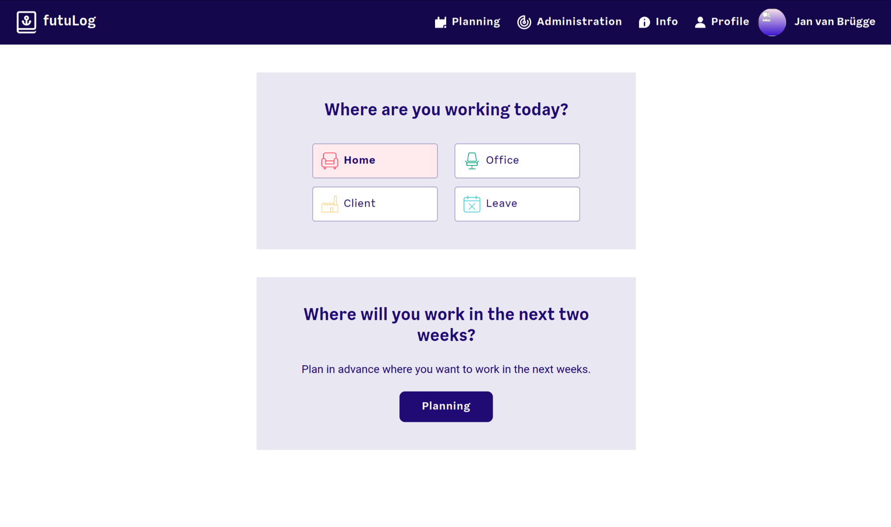
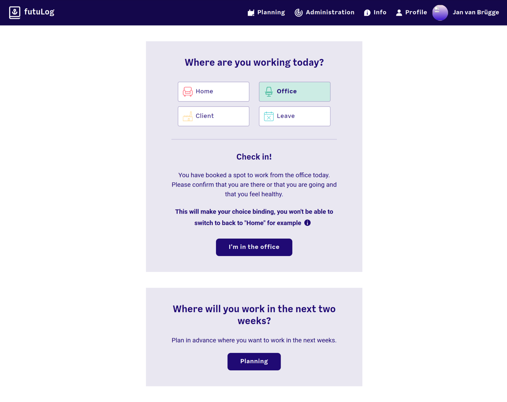
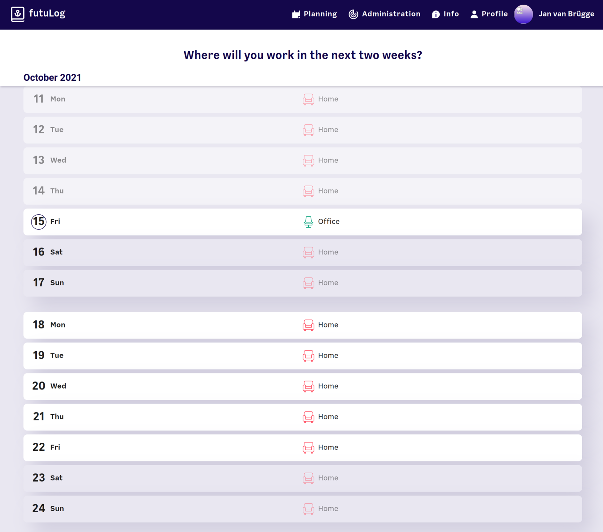
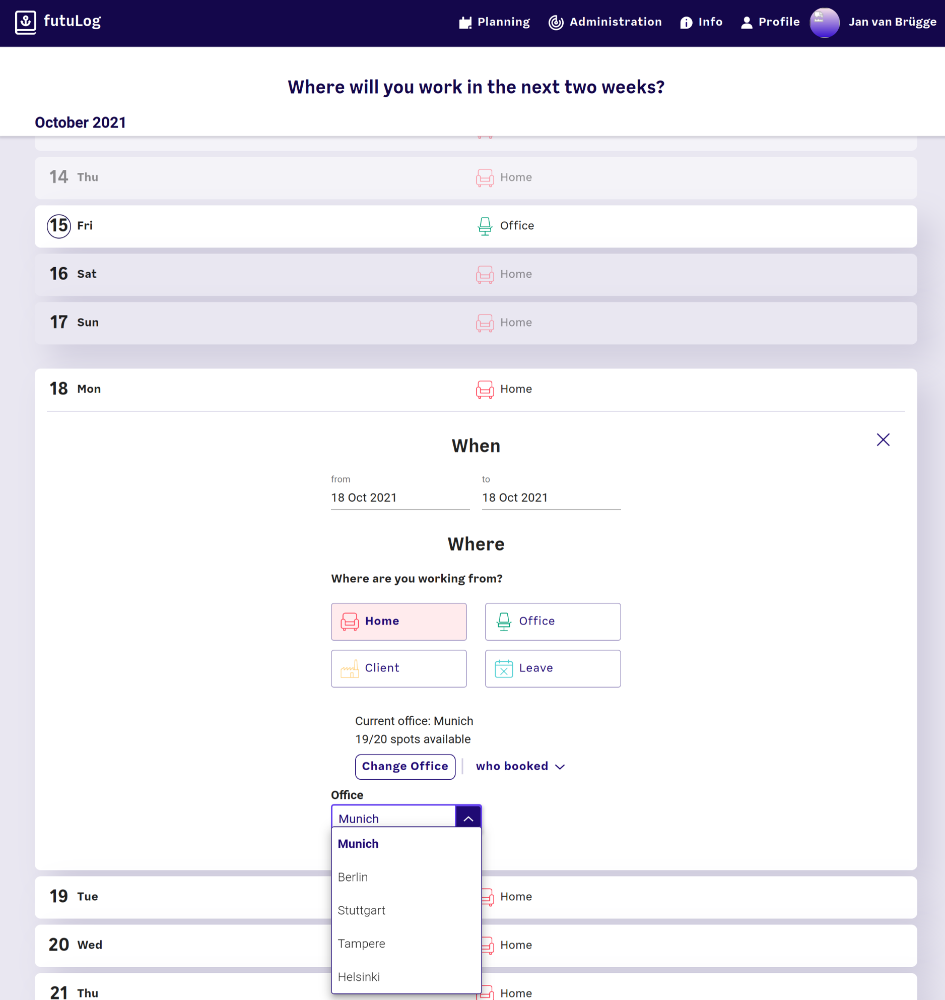

Project report: futuLog
Table of contents
Introduction
Due to the COVID-19 pandemic, in the first half of 2020, Futurice had all employees work from home. As the restrictions were partly lifted and some people needed material or equipment from the office, a system had to be put in place to trace contracts. The german government required that in case of a positive COVID-19 test, all other employees that were in contact with the positive individual need to be contacted in order to be tested themselves.
At first, this was accomplished with an Excel spreadsheet that everyone could write to. However, this approach quickly showed severe limitations. It was hard hard to use, especially on mobile devices, e.g. it was very easy to accidentaly delete other cells or be off by one column and sign in as another employee. As a result of that, only about 50% of the people that went to the office actually signed into the sheet. Additionally there were some privacy concerns. With the spreadsheet, all historical data was collected for everyone to see, so if anyone was aware that there had been a positive case at a certain date, they could just look up the date and guess who was the person in question.
These concrete problems formed the requirements for the development of an application to do the tracing:
- Easy to use, with first class mobile support
- Only a small group (administrators) can see past data for privacy
- Can export a list of all people that were in contact with a given person in the last two weeks (again only for administrators)
The application that was developed in turn was later called futuLog.
The team
The team varied over time as client projects required designers and developers as staff. The biggest contributors to futuLog were:
- Beatrice Rachello (Design)
- Simon Messmer (Design)
- Alex Seidler (Frontend Development)
- Egor Sorokin (Frontend Development)
- Pierre Hedkvist (Frontend Development)
- Viktorija Valsoe (Frontend Development)
- Jan van Brügge (Me -- Backend Development, later some Frontend Development)
The office management and human care teams of Germany and later on also Finland were acting as the stakeholders, giving feedback and requirements for the project.
Minimum Viable Product - The user interface
Most of the work was in the user interface. The design team started with user research and interviews in order to make futuLog as intuitive as possible. At the same time, the frontend team started setting up the development environment, decided to use React with material-ui as a component library for the project. As soon as the first few main pages had a complete design, the team implemented them in the codebase.
When a new user first opens futuLog, they are redirected to the welcome screen where they can select their usual office. This will be the office they sign in by default:

After clicking "start", or when visiting futuLog the next time, the user starts at the main view:

In this main view the user can immediately book a spot in their default office by clicking the big "Office" button. Once they do, they have the option to confirm their stay. This is meant to be done once you really are in the office and it will lock in that choice:

With either the "Planning" button in the top bar or the "Planning" button at the bottom, the user gets to the planning view which shows their choices for the next few days:

By clicking on one of the dates, the user can book a spot in advance. This booking view shows the user how many spots are still left in the office and who booked those spots. It also allows them to change the office they want to reserve a spot in:

Impact
TODO: Explain what what the diagrams say
TODO: Explain the second visualization